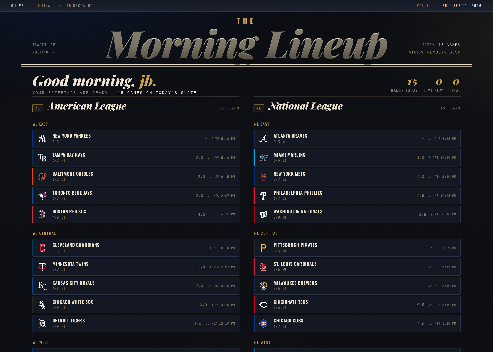
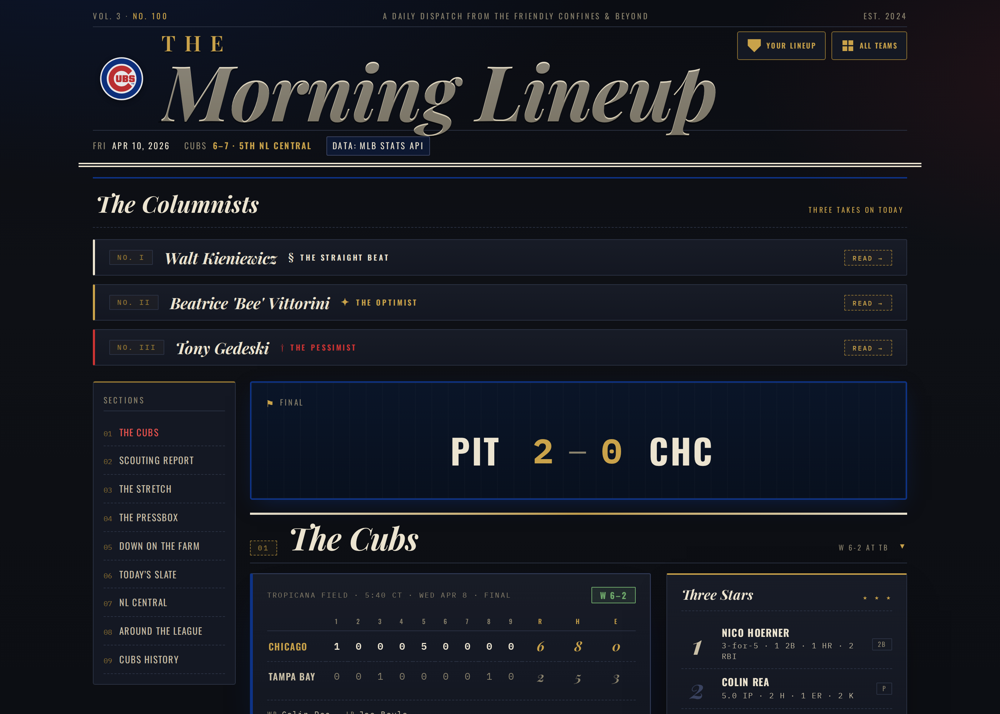
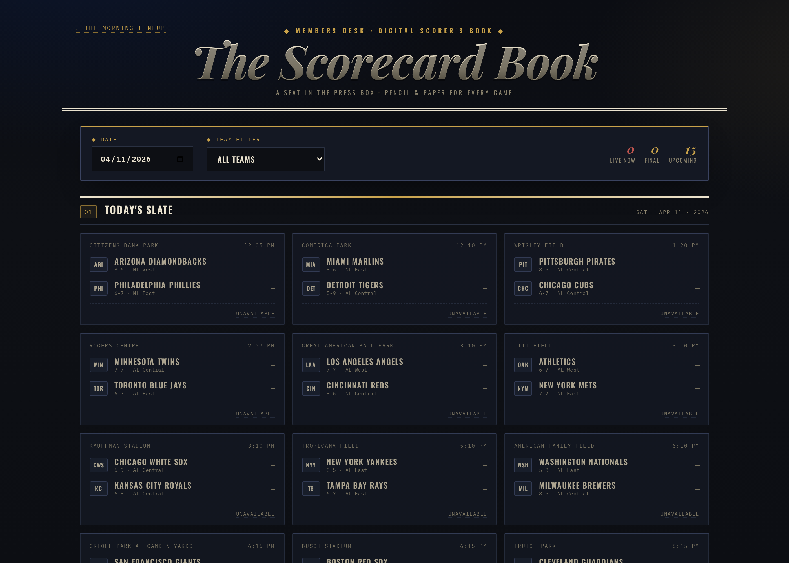

Morning Lineup started as a replacement for a Gmail-delivered Cubs briefing — an email I kept forgetting to read. It grew, fast, into a thirty-team editorial sports publication with its own voice, its own design system, and its own autonomous publishing pipeline.
Every morning at six in the morning Central Time, a scheduled Claude agent wakes up, pulls fresh data from the MLB Stats API, rebuilds every team's page, regenerates three LLM-authored columnist columns per team, and deploys the whole site to GitHub Pages. Nobody touches it. The site you're reading right now was not edited by hand — it was rebuilt while you were still asleep.
It is also a companion to The Scorecard Book, a standalone digital scorer's book: SVG diamond, play-by-play journey, strike zone overlay, multi-game finder, per-team theming. The briefing is the publication. The scorecard is the pen.
The Capabilities
What it actually does
Thirty teams, one system
Per-team JSON config drives colors, branding, affiliates, rivals, and columnist personas. Every team gets a fully branded page from the same 900-line Python orchestrator.
Autonomous daily rebuild
A scheduled Claude agent runs build.py and deploy.py at 6 AM Central. The site is never stale. It is also never touched by hand after initial setup.
LLM columnist pipeline
Three personas × thirty teams × daily generation. Ollama local-first (qwen3:8b), Anthropic API fallback, per-persona caching to keep costs sane.
Editorial design system
Playfair italics, Oswald heads, Lora body, kicker stats, hero grids. Dark newspaper aesthetic with team-specific accent colors injected via CSS variables.
The Scorecard Book
Eleven JS modules. SVG diamond renderer with journey-aware basepaths. Live MLB feed parser, strike zone overlay, dark/paper theme toggle, multi-game finder.
Real auth
Supabase email and OAuth sign-in, followed-teams sync, per-user section preferences, custom density modes. Not a login stub — a working personalization layer.
PWA & offline
Service worker with cache versioning, per-team manifests, installable on mobile. Briefings work offline once read.
Zero dependencies
build.py runs on Python stdlib only. Vanilla JS, no framework, no build step. Boots on a clean box with one command.
The Rooms
A walk through the gate


build_landing() pass in the same orchestrator.
The Stack
Under the hood
Come inside.
The public tour ends here. The reading room — personalized briefings, the full Scorecard Book, preferences, history — lives behind a free sign-in.